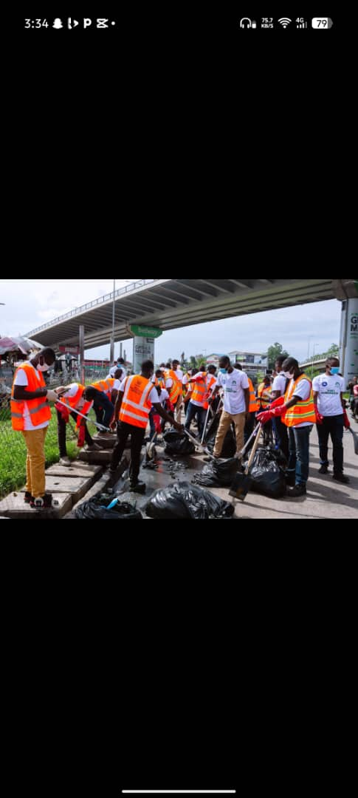
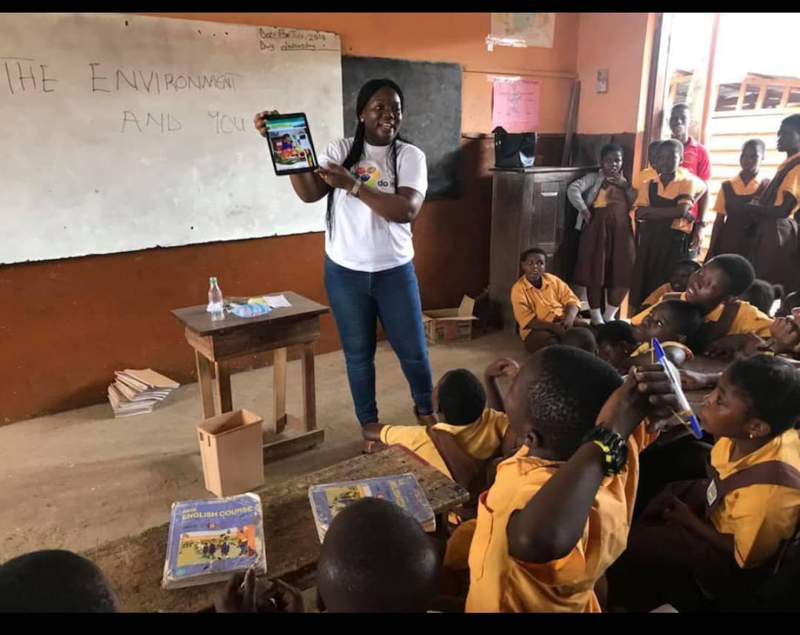

Collection
Roadside & Market Clean-Ups
Organised crews clear waste from roadsides, market gutters and drains across the Twin City.
GreenSphere Impact Foundation organises communities, schools and local businesses across the Twin City to collect, sort and recycle waste — building a cleaner coastline and new income for the people who live here.
Founded by residents of Takoradi, GreenSphere Impact Foundation works directly with market traders, schools, households and local government to make waste separation and recycling a normal part of daily life — not an afterthought.

Organised crews clear waste from roadsides, market gutters and drains across the Twin City.

Community hubs sort, clean and bale plastic bottles ready for recycling.

Hands-on waste-sorting and environmental lessons for basic schools across the Twin City.

Monthly volunteer clean-ups that have removed over 12 tonnes of plastic from our coastline.

Planting trees on reclaimed waste sites to restore green cover across the Metropolis.

Training young people to turn sorted plastic waste into paving tiles and craft goods.
"Since the recycling hub opened, our market is cleaner and I earn extra selling sorted plastic by the kilo."
Adjoa Baffour — Trader, Takoradi Market Circle
"I joined as a volunteer to fill my free time. A year on, I'm now a paid hub coordinator."
Nana Yaw Sarpong — GreenSphere Volunteer
"Our pupils now sort their own classroom waste without being reminded. That habit will stay for life."
Mr. Isaac Fynn — Headteacher, Effiakuma D/A Basic School